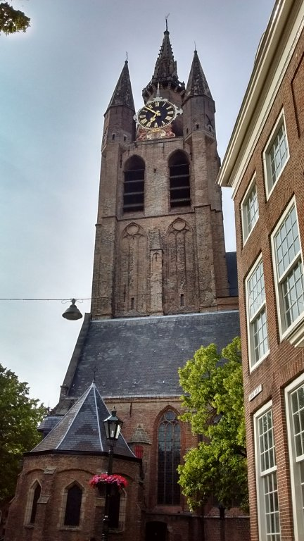
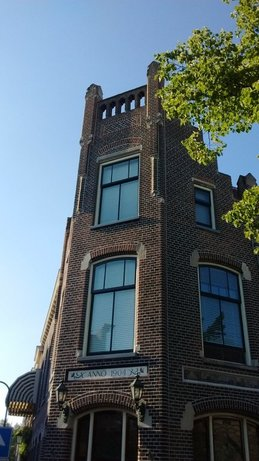

پیادهروی در دلفت-عصر بیست و نه و سی جون دوهزار و پانزده

کلیسای قدیم از نمایی دیگر (عکس بالا) و خانهای در مقایسه با کلیسا نه چندان قدیمی سر کوچه خودمان. عکس دوم را که میگرفتم هوا صاف و آفتابی بوده. یک شباهتهایی بین این دو تا عکس بود که باعث شد بگذارمشان کنار هم. به ساعت کلیسا اگر دقت کنید حقههای معمار را میتوانید ببینید برای راست نشان دادن برج کج. دو قطعه فلزی پیکان مانند با اندازههای مختلف کنار عددهای سه و نه. برجهای کوچک کنار ساعت با طولهای کمی متفاوت (اگر اشتباه نکنم). و چند تا حقه دیگر که از این زاویه پیدا نیست.